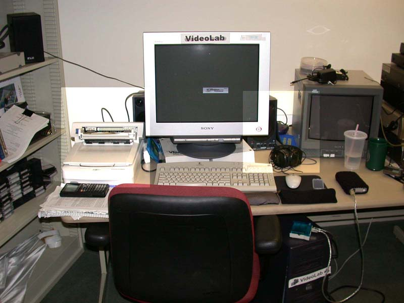
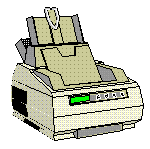

Extra Computer Parts
Extra Computer Parts 

There are many other things that can be attached to a computer that allow a person to give information to the computer or get information from the computer. We call these other computer parts peripherals. In the picture of Videolab, you can see two brightened regions. The one on the left shows a scanner, while the one on the right shows a pair of headphones. In each of the brightened regions, you can also see a speaker that is partially hidden by the monitor. All of these devices are peripherals. The scanner allows you to take a picture of a piece of paper and put it into the computer. The speakers and headphones allow you to hear what the computer is playing.
Another common computer peripheral is a printer. You can see a little graphic of a printer below. A printer, like a monitor, speakers, or headphones, allows the computer to give you information. The computer is able to make a permanent picture of something by printing it on paper.
